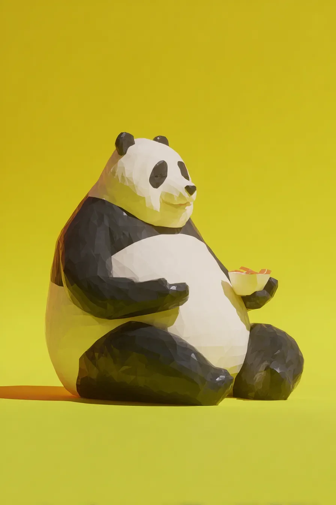

평생 앗아가기만 하던 우주가 마침내 무언가를 돌려주기로 한 모양이었다. 그곳은 그저 누울 자리가 아니었다. 잠자리계의 시스티나 성당이었으니, 부드러운 손길로 빚어낸 듯 오목한 땅에는 초록빛으로 진동할 듯한 이끼가 덮여 있었다.
[The universe, after a lifetime of taking, had finally decided to give something back. It wasn’t just a place to lie down; it was the Sistine Chapel of sleeping spots, a small depression in the earth contoured by a gentle hand and upholstered in moss that practically vibrated with greenness.]
따스한 먼지와 곧 닥칠 더없는 행복의 냄새를 풍기는 황금빛 기둥 같은 햇살 한 줄기가 그 정중앙에 정확히 내려앉았다. 휴식이라는 예술을 기리는 털북숭이 기념비인 내 몸은 마지막 성스러운 순례를 시작했다.
[A single sunbeam, a golden pillar smelling of warm dust and imminent bliss, landed squarely in the center. My body, a furry monument to the art of relaxation, began its final, holy pilgrimage.]
한 발, 그리고 다른 한 발.
[One paw, then the other.]
그리고 그때, 배신이 있었다. 심심한 신이 일부러 심술을 부려 놓아둔 것 같은, 부서지기 쉬운 회색 손가락 같은 나뭇가지 하나가 내 낙원의 정중앙에 놓여 있었다. 이 순전하고도 노골적인 뻔뻔함이라니. 가시 하나에 왕좌를 빼앗긴 군주처럼 지친 한숨을 내쉬며, 나는 발톱 하나를 빼 들어 그 거슬리는 물건을 저편으로 튕겨 버렸다.
[And then, betrayal. A brittle, grey finger of a twig, placed with the deliberate malice of a bored god, lay directly in the center of my paradise. The sheer, unmitigated audacity. With the weary sigh of a monarch dethroned by a splinter, I extended a single claw and flicked the offending article into oblivion.]
길은 깨끗해졌다. 왕좌가 기다리고 있었다. 나는 육중한 엉덩이를 낮추며, 느리고 절제된 동작으로 열반의 경지로 하강했다. 하지만 세상은 확실한 것을 싫어하는 모양이다. 간질거림. 행렬. 살아 움직이는 검은 실개천 같은 개미 떼가 내 앞다리를 주간 고속도로 삼아 행진하고 있었다. 내가 이해할 수도 용납할 수도 없는 임무를 수행 중인 규율 잡힌 군단. 필시 경쟁 개미집에서 특정 빵 부스러기를 훔쳐 오는 따위의 심오하고 중요한 임무일 테지.
[The path was cleared. The throne awaited. I lowered my considerable hindquarters, executing a slow, controlled descent into nirvana. But the world, it seems, despises a sure thing. A tickle. A procession. A living, black rivulet of ants was using my forearm as an interstate highway, a disciplined legion on a mission I could neither comprehend nor condone—probably something deeply important, like stealing a specific breadcrumb from a rival anthill.]
잠시 동안, 나는 그 작은 문명에 털북숭이 흑백의 대재앙이 되어줄까 고민했다. 하지만 이내 관뒀다. 너무 귀찮았다. 이건 인격 시험이야, 나는 거창하게 결론 내렸다. 나는 털북숭이 스토아 철학자가 되리라. 나는 이 고귀한 의지를 정확히 15초 동안 유지했다. 그쯤 되자 수천 개의 발이 주는 간지러움은 사소한 성가심을 넘어 완전한 정신적 공격으로 격상되었다.
[For a moment, I considered becoming a furry, black-and-white apocalypse to their tiny civilization. But no. Too much effort. This, I decided grandly, was a test of character. I would be a furry stoic. I held this noble intention for precisely fifteen seconds, by which point the thousand-footed tickle had escalated from a minor nuisance to a full-blown psychological assault.]
개미 떼는, 무너져 가는 나의 정신 상태를 알지 못한 채, 마침내 지나갔다. 승리는 내 것이었다.
[The ant horde, oblivious to my crumbling psyche, finally passed. Victory was mine.]
마지막의 달콤한 항복을 위해 몸을 앞으로 숙이는 순간, 하얀 무언가가 하늘거리며 내려왔다. 어떤 지독하게 명랑한 새가 떨어뜨린 깃털 하나가 공중을 떠다녔다. 나의 장엄한 선언을 멈추게 하는 작고 건방진 쉼표였다.
[I leaned forward, ready for the final, sweet surrender, when a flicker of white descended. A single feather, shed from some criminally cheerful bird, drifted on the air—a tiny, insolent comma pausing my grand statement.]
깃털은 춤을 추듯, 약을 올리듯 하더니, 내 코끝에 정확히 내려앉았다. 그리고 바로 그 순간, 굳게 쌓아 올린 내 결심이 먼지처럼 허물어졌다. 나뭇가지와 개미, 그리고 깃털에 패배한 나는 완전히 무너지고 말았다.
[It danced. It teased. It landed directly on the tip of my nose. And just like that, the entire architecture of my resolve crumbled into dust. Defeated by twig, ant, and feather, I was undone.]
행성의 핵에서부터 솟아나는 듯한 신음과 함께, 내 몸은 옆으로 쓰러졌다. 완벽한 자리를 완전히 놓치고 그 옆 차갑고 딱딱한 땅 위에 볼품없는 덩어리가 되어 널브러졌다. 그토록 힘들게 싸워 얻고자 했던 포상인 잠이, 내가 자초한 골목길에서 나를 덮쳤다. 한편, 깃털은 정복된 언덕 위의 작은 백기처럼, 제자리에 완벽하게 남아 있었다.
[With a groan that seemed to rise from the planet’s very core, my body slumped sideways, missing the perfect spot entirely and coming to rest in a lumpy, undignified heap on the cold, hard ground beside it. Sleep, the prize I had fought so hard for, mugged me in the alley of my own making. The feather, for its part, remained perfectly in place, a tiny white flag on a conquered hill.]